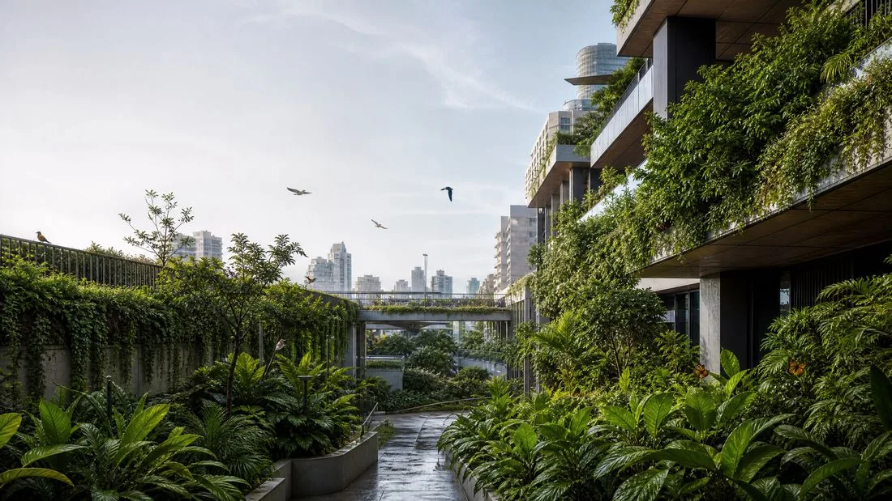
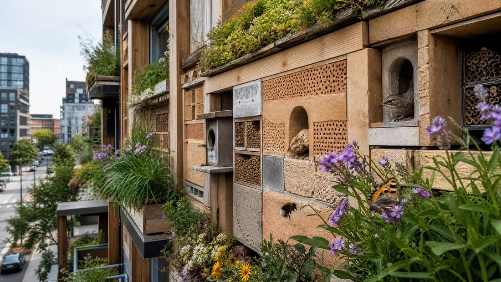

บทความ
สถาปัตยกรรมฟื้นฟู

หลายทศวรรษที่ผ่านมา สถาปัตยกรรมยั่งยืนมุ่งเน้นการลดผลกระทบเชิงลบ ใช้พลังงานน้อยลง ขยะน้อยลง คาร์บอนน้อยลง แนวทางที่ทะเยอทะยานกว่านั้นกำลังได้รับความนิยม นั่นคือสถาปัตยกรรมฟื้นฟู แนวคิดนี้ไม่ได้มุ่งเพียง ไม่ทำร้าย อีกต่อไป แต่มุ่งฟื้นฟูระบบนิเวศท้องถิ่นอย่างจริงจัง สถาปนิกกลายเป็นเหมือนนักนิเวศวิทยา ออกแบบอาคารให้ทำหน้าที่เป็นจุดเชื่อมต่อสำคัญในทางเดินความหลากหลายทางชีวภาพของเมือง
จากความยั่งยืนสู่การฟื้นฟู
สถาปัตยกรรมฟื้นฟูตั้งอยู่บนแนวคิดที่ว่าอาคารควรส่งผลดีต่อสภาพแวดล้อม เป็นการวิวัฒนาการร่วมกันระหว่างระบบสังคมและระบบนิเวศ แทนที่จะมองที่ดินเป็นหน้ากระดาษเปล่า นักออกแบบวิเคราะห์บริการทางระบบนิเวศที่สูญเสียไป เช่น การกรองน้ำ การผสมเกสร การควบคุมอุณหภูมิ เพื่อนำกลับเข้าสู่โครงสร้างอาคารโดยตรง
ทางเดินความหลากหลายทางชีวภาพ: เชื่อมโยงเกาะแห่งชีวิต
หนึ่งในความท้าทายสำคัญคือการทำลายการแตกกระจายของถิ่นที่อยู่ตามธรรมชาติที่เกิดจากการขยายตัวของเมือง สถาปนิกกำลังออกแบบอาคารให้ทำหน้าที่เป็น สะพาน สำหรับพืชและสัตว์ โดยผสานผนังที่เป็นมิตรกับแมลงผสมเกสร หลังคาที่เป็นถิ่นอาศัย และทางผ่านที่ปลอดภัยสำหรับสัตว์ขนาดเล็ก ทางเดินเหล่านี้ไม่ใช่แค่สวนสาธารณะ แต่เป็นระบบที่เชื่อมต่อกันซึ่งช่วยให้สิ่งมีชีวิตเคลื่อนที่ หาอาหาร และขยายพันธุ์ได้ใจกลางเมืองที่หนาแน่น

ออกแบบเพื่อแมลงผสมเกสรและสัตว์ป่าท้องถิ่น
ดีไซน์เชิงชีวภาพกำลังกลายเป็นเรื่องใช้งานได้จริง ผนังอาคารผสานรังนก โรงแรมแมลง และโครงสร้างทำรังสำหรับผึ้งเดี่ยว การเลือกพันธุ์พืชบนหลังคาและระเบียงไม่ได้ขึ้นอยู่กับความสวยงามอีกต่อไป แต่ขึ้นอยู่กับความต้องการของแมลงผสมเกสรท้องถิ่น เป็นวิธีหนึ่งในการรักษาวงจรธรรมชาติกลางเมือง

บทสรุป
สถาปัตยกรรมฟื้นฟูเป็นการเปลี่ยนมุมมองจากที่มนุษย์เป็นศูนย์กลางไปสู่มุมมองที่ใส่ใจสิ่งมีชีวิตทั้งหมดมากขึ้น การเปลี่ยนเมืองให้เป็นระบบนิเวศที่ทำงานได้จริง สถาปนิกไม่ได้เพียงสร้างที่พักพิงอีกต่อไป แต่กำลังช่วยซ่อมแซมผืนผ้าแห่งชีวิตรอบตัวเรา